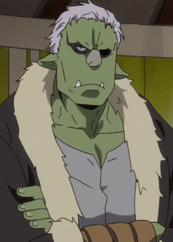

Kanehira Yamamoto is a Japanese voice actor.
- Gender: Male
- Birthday: May 6, 1977
- Hometown: Tokyo, Japan

| |
Kanehira Yamamoto is a Japanese voice actor.
|
|---|
|  | Rigurdo | That Time I Got Reincarnated as a Slime | Rigurdo is the goblin vilage elder and Rimuru Tempest's very first subordinate. He is the classic "only seen when there's trouble" character. He was the most grateful out of all goblins. |
Go Back to Main Page |
Go Back to Homepage |
|
|
|
OR |
|